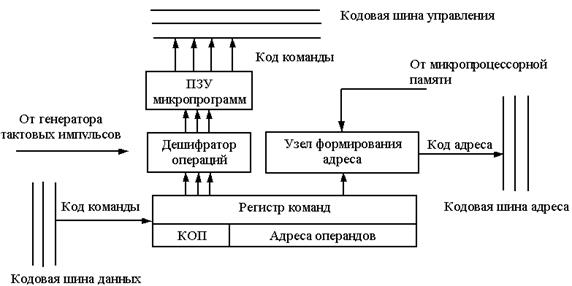

Адрес памяти- это понятие данных, используемых программно-аппаратными средствами для получения доступа к требуемому участку памяти компьютера. Адрес памяти представляет собой последовательность цифр фиксированной длины, которые, обычно, отображаются и обрабатываются как целые числа. Причиной такой формы записи являются особенности CPU (такие как программный счетчик и возрастающие регистры адреса(ячейки) памяти), а также использование памяти как массива, поддерживаемого различными языками программирования.
Память цифрового компьютера (или основная память) состоит из множества ячеек памяти, каждая из которых имеет физический адрес- код, который центральный процессор (или другое устройство) может использовать для доступа к ней. Как правило, только системное программное обеспечение, то есть BIOS, операционные системы, и некоторые специализированные вспомогательные программы (например, тестеры памяти), обращаются к физической памяти с использованием операторов машинного кода и регистров процессора, Инструктируя CPU направлять аппаратное устройство, называемое контроллером памяти, использовать шину памяти или системную шину или отдельные управляющие, адресные и информационные шины для выполнения команд программы. Шина контроллеров памяти состоит из нескольких параллельных линий, каждая из которых представлена двоичной цифрой (бит). Ширина шины и, следовательно, количество адресуемых единиц хранения и количество битов в каждой единице варьируется среди компьютеров. Физический адрес - это конечный результат всех преобразований других типов адресов, перечисленных далее. На нём кончается работа внутри центрального процессора по преобразованию адресов.
Эффективный адрес — это начало пути вычисления физического адреса. Он задаётся в аргументах индивидуальной машинной инструкции, и вычисляется из значений регистров, смещений и масштабирующих коэффициентов, заданных в ней явно или неявно.
Без знания номера и параметров сегмента, в котором указан эффективный адрес, последний бесполезен. Сам сегмент выбирается ещё одним числом, именуемым селектором. Пара чисел, записываемая как selector:offset, получила имя логический адрес. Так как активные селекторы хранятся в группе специальных регистров, чаще всего вместо первого числа в паре записывается имя регистра, например, ds:0x11223344. В старых компьютерах логические и физические адреса были согласованы, но с момента появления виртуальной памяти у большинства прикладных программ нет информации о физических адресах. Скорее, они адресуют логические адреса или виртуальные адреса, используя блок управления памятью компьютера и отображение памяти операционной системы.
Эффективный адрес — это смещение от начала сегмента — его базы. Если сложить базу и эффективный адрес, то получим число, называемое линейным адресом: lin_addr = segment.base + eff_addr Преобразование логический → линейный не всегда может быть успешным, так как при его исполнении проверяется несколько условий на свойства сегмента, записанных в полях его дескриптора. Например, проверяется выход за границы сегмента и права доступа.
В литературе и в документации других архитектур встречается ещё один термин — виртуальный адрес. Он не используется в документации Intel на IA-32, однако встречается, например, в описании Intel® Itanium, в котором сегментация не используется. Можно смело считать, что для IA-32 виртуальный == линейный. В советской литературе по вычислительной технике этот вид адресов также именовался математическим.
Большинство современных компьютеров используют байтовую адресацию, причем каждый адрес идентифицирует один 8-разрядный байт памяти; данные, слишком большие чтобы храниться в одном байте, могут находиться в нескольких байтах, образуя последовательность последовательных адресов. Существуют компьютеры с пословной адресацией, где минимальным адресуемым блоком памяти является слово на процессоре. Например, миникомпьютер Data General Nova и микросхемы Texas Instruments TMS9900 и National Semiconductor IMP-16 использовали 16-битные слова, также было много 36-разрядных универсальных компьютеров (например, PDP-10), которые использовали 18-разрядную пословную адресацию, а не байт-адресацию, предоставляя адресное пространство из 218 36-битных слов (приблизительно 1 мегабайт памяти). Эффективность адресации памяти зависит от размера бита шины, используемой для адресации - чем больше бит, тем больше адресов доступно компьютеру. Например, 8-разрядный адресный компьютер с 20-разрядной адресной шиной (например, Intel 8086) может адресовать 220 (1 048 576) ячеек памяти или один MB памяти, тогда как 32-разрядная шина (например, Intel 80386) Адреса 232 (4 294 967 296) или 4 ГБ адресного пространства. Напротив, 36-разрядный адресно-адресуемый аппарат с 18-разрядной адресной шиной адресует только 218 (262,144) 36-разрядных местоположений (9,437,184 бита), что эквивалентно 1,179,648 8-битным байтам или 1152 КБ.
Некоторые старые компьютеры (десятичные компьютеры) были десятизначными с цифровой адресацией. Например, каждый адрес в магнитной памяти IBM 1620 идентифицировал одну шестиразрядную двоично-кодированную десятичную цифру, состоящую из бита четности, бита флага и четырех числовых битов. В 1620 использовались пятизначные десятичные адреса, поэтому в теории максимально возможный адрес был 99,999. На практике CPU поддерживал 20000 ячеек памяти и мог добавить до двух дополнительных модулей внешней памяти, каждый из которых поддерживает 20 000 адресов, в общей сложности 60 000 (00000-59999).
В команде может не содержаться явных указаний об операнде; в этом случае операнд подразумевается и фактически задается кодом операции команды.
В команде может не содержаться явных указаний об адресе участвующего в операции операнда или адреса, по которому должен быть размещен результат операции, но этот адрес подразумевается.
В команде содержится не адрес операнда, а непосредственно сам операнд. При непосредственной адресации не требуется обращения к памяти для выборки операнда и ячейки памяти для его хранения. Это способствует уменьшению времени выполнения программы и занимаемого ею объёма памяти. Непосредственная адресация удобна для хранения различного рода констант.
Адрес указывается непосредственно в виде некоторого значения, все ячейки располагаются на одной странице. Преимущество этого способа в том, что он самый простой, а недостаток — в том, что разрядность регистров общего назначения процессора должна быть не меньше разрядности шины адреса процессора.

КОП - код операции
ПЗУ - Постоянное запоминающее устройство
При этом способе адресации исполнительный адрес определяется как сумма адресного кода команды и базового адреса, как правило хранящегося в специальном регистре — регистре базы.
Относительная адресация позволяет при меньшей длине адресного кода команды обеспечить доступ к любой ячейке памяти. Для этого число разрядов в базовом регистре выбирают таким, чтобы можно было адресовать любую ячейку оперативной памяти, а адресный код команды используют для представления лишь сравнительно короткого «смещения». Смещение определяет положение операнда относительно начала массива, задаваемого базовым адресом.
В адресном поле командного слова содержатся только младшие разряды адресуемой ячейки. Дополнительный указательный регистр.
Адресация с регистром страницы является примером сокращённой адресации. При этом вся память разбивается на блоки-страницы. Размер страницы диктуется длиной адресного поля.
Регистровая адресация является частным случаем укороченной. Применяется, когда промежуточные результаты хранятся в одном из рабочих регистров центрального процессора. Поскольку регистров значительно меньше чем ячеек памяти, то небольшого адресного поля может хватить для адресации.
Впервые косвенная адресация 2-ого ранга (указатели) была использована при программировании на МЭСМ. Добавление к команде со значением адреса операнда "0" значения ячейки памяти, в котором находится адрес требуемого операнда, позволило использовать эти ячейки памяти в качестве значений адресов, т.е. указателей на адреса операндов.
Косвенная адресация высших рангов впервые была введена в Адресном языки программирования (1955г.) и апаратно реализована в компьютере "Киев". В системе команд компьютера "Киев" есть Ф-операция, которая позволяет уменьшать ранг адреса, т.е. выполнять "штрих-операцию" или разыменовывать указатель, а групповые операции модификации адресов позволяли аппаратно выполнять многократное разыменование указателей (Multiple indirection of Pointers).
Адресный код команды в этом случае указывает не адрес с данными, а адрес ячейки памяти, в которой находится адрес операнда или команды. Это и есть адресация 2-ого ранга или указатели. Косвенная адресация широко используется в малых и микроЭВМ, имеющих короткое машинное слово, для преодоления ограничений короткого формата команды (совместно используются регистровая и косвенная адресация).
Эффективность вычислительных систем, предназначенных для обработки данных, повышается, если имеется возможность выполнять операции со словами переменной длины. В этом случае в машине может быть предусмотрена адресация слов переменной длины, которая обычно реализуется путём указания в команде местоположения в памяти начала слова и его длины.
Стековая память, реализующая безадресное задание операндов, особенно широко используется в микропроцессорах и Мини-ЭВМ.
Поскольку регистровая косвенная адресация требует предварительной загрузки регистра косвенным адресом из оперативной памяти, что связано с потерей времени, такой тип адресации особенно эффективен при обработке массива данных, если имеется механизм автоматического приращения или уменьшения содержимого регистра при каждом обращении к нему. Такой механизм называется соответственно автоинкрементной и автодекрементной адресацией. В этом случае достаточно один раз загрузить в регистр адрес первого обрабатываемого элемента массива, а затем при каждом обращении к регистру в нём будет формироваться адрес следующего элемента массива.
При автоинкрементной адресации сначала содержимое регистра используется как адрес операнда, а затем получает приращение, равное числу байт в элементе массива. При автодекрементной адресации сначала содержимое указанного в команде регистра уменьшается на число байт в элементе массива, а затем используется как адрес операнда.
Автоинкрементная и автодекрементная адресации могут рассматриваться как упрощенный вариант индексации — весьма важного механизма преобразования адресных частей команд и организации вычислительных циклов, поэтому их часто называют автоиндексацией.
Для реализуемых на ЭВМ методов решения математических задач и обработки данных характерна цикличность вычислительных процессов, когда одни и те же процедуры выполняются над различными операндами, упорядоченно расположенными в памяти. Поскольку операнды, обрабатываемые при повторениях цикла, имеют разные адреса, без использования индексации требовалось бы для каждого повторения составлять свою последовательность команд, отличающихся адресными частями.
Программирование циклов существенно упрощается, если после каждого выполнения цикла обеспечено автоматическое изменение в соответствующих командах их адресных частей согласно расположению в памяти обрабатываемых операндов. Такой процесс называется модификацией команд, и основан на возможности выполнения над кодами команд арифметических и логических операций.